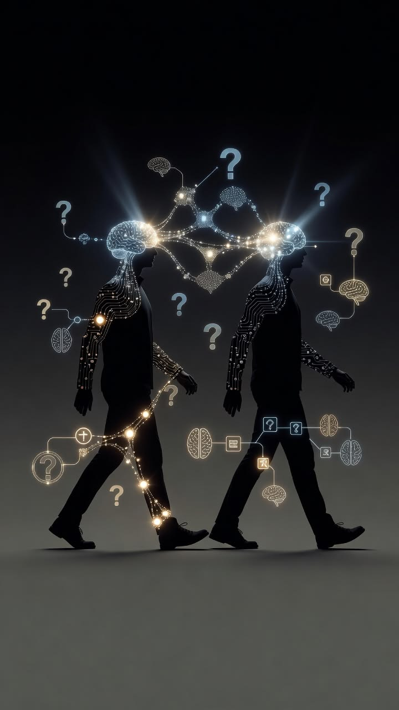

01
Introduction to Social Influence
Explore how people’s thoughts and actions are shaped by other people, groups, and social settings.

LEARNING PATH
Explore conformity, authority, norms, groups, leadership, and social behavior.
Move through the lessons in order, take notes, and test your understanding with reflection and knowledge checks.
CURRICULUM
Explore how people’s thoughts and actions are shaped by other people, groups, and social settings.
Understand how people may adjust behavior or opinions to match group norms, with or without explicit pressure.
Examine how authority and context influence compliance and why ethical judgment still matters.
Learn how shared expectations guide behavior and how norms can vary across communities and situations.
Consider how friends and peers can shape choices, identity, risk-taking, and belonging.
Explore the signals people use to judge authority and ways to assess whether that authority is relevant and trustworthy.
Understand how group identity, roles, shared goals, and group size can affect individual actions.
Explore how communication, accountability, competence, and care can influence a group’s direction.
Examine how algorithms, likes, trends, creators, and online communities can shape attention and behavior.
Educational note: Human behavior is complex. These lessons are intended to build understanding and critical thinking, not to diagnose people or provide instructions for exploiting them.